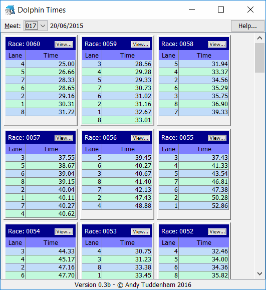
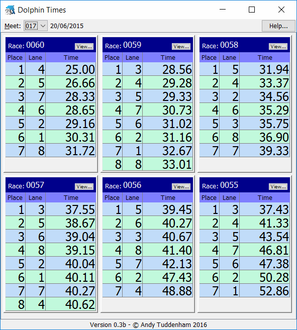

The Dolphin Times program runs alongside the Dolphin Timer, reading the files produced by the Dolphin Timer and sorting them in 'finish time' rather than 'lane number' order. This makes it easier for the referees to check that their finish order matches the Dolphin Timer.
The main window contains a number of race results, each race result has the race number at the top left, a table below that has details of the times swum by each lane arranged in 'finish time' order. There is also a 'View...' button at the top right, see 'Keeping a race result displayed'.
The number of race results in the main window can be set in the DolphinTimes.properties file (see below). When this number is reached, new results are added at the top left and old ones are dropped.
Here is an example of the main window using default settings:
The program is controlled by a number of settings in the DolphinTimes.properties file, this file is read when the program starts.
The file contains a number of setting in 'key=value' format. Each 'key=value' pair must be on a separate line with no spaces.
The following 'key=value' pairs can be used:
| key | description | range | default |
|---|---|---|---|
| lane.count | specifies the number of lanes in the pool | 6, 8 or 10 | 10 |
| race.count | specifies the number of results to keep in the main window | any positive integer or all | all |
| header.font.size | specifies the size of the text displaying the race number in the results header | 8 to 24 | 11 |
| results.places | specifies weather to include the place numbers in the results table | true or false | false |
| results.font.size | specifies the size of the text displaying the race results in the table | 8 to 24 | 11 |
| font.size | specifies the size of the text if header.font.size or table.font.size are not specified | 8 to 24 | 11 |
any line starting with a '#' is treated as a comment and ignored by the program.
Here is an example:
lane.count=8 race.count=6 header.font.size=16 results.places=true results.font.size=24 #font.size=11
If any of these settings are changed, the program will need to be restarted before they will become effective.
This is what the main window would look like with the above settings:
As mentioned earlier, if 'race.count' has been set in the properties file, old race results will be dropped from the main window when that number is reached. If you want to keep one of the race results displayed, you can click the 'View...' button and a copy of that race result will be opened in a new window.